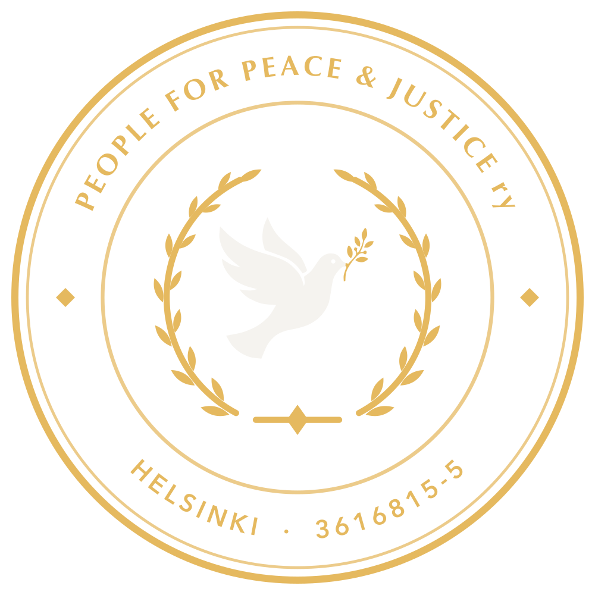
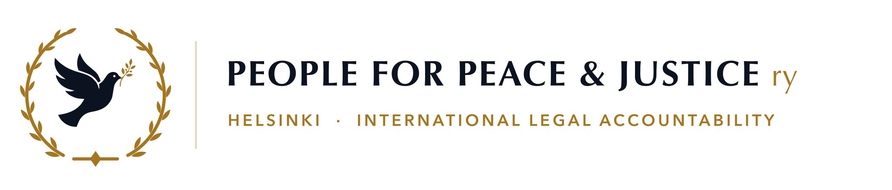
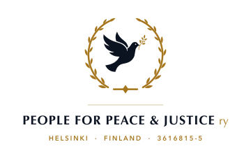

svg/pfpj-seal-official-dark.svg

svg/pfpj-seal-official-light.svg
Crest (≥48px) · Shield Badge (16–40px) · Favicon

1-Color Legal Stamp & Knockout White
Canonical vector logo marks, lockups, institutional seals, and print correspondence stationery for PFPJ ry (Helsinki, Finland). Every SVG is self-contained with outlined typography so it renders identically across web, print, and legal dossiers.




